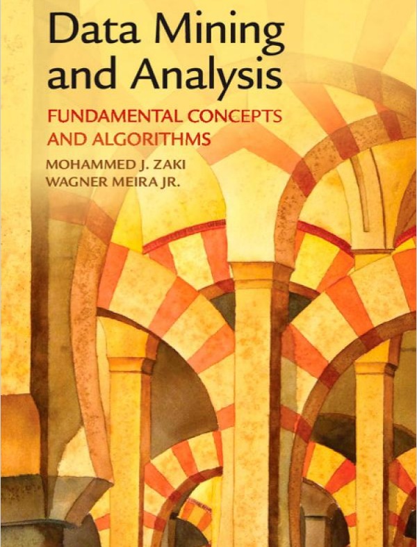
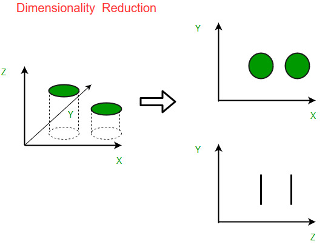

 ## Module - Dimensionality reduction ### ITEC 4220 - Advanced Data Analytics #### Cengiz Gunay, updated Fall 2023 #### Reading: [Ch 7](https://dataminingbook.info/book_html/chap7/book.html) from [Zaki and Meira](https://dataminingbook.info/)
### What is dimensionality reduction? Curse of dimensionality: - anything more than 3 dimensions is difficult to visualize - can be hard to process computationally - relations between data points may not be visible
### Dimensionality reduction idea <br/> (image credits [GeeksForGeeks](https://www.geeksforgeeks.org/dimensionality-reduction/))
### Example dataset: Iris <img src='images/Iris_germanica.jpg' style="float: right; max-width: auto; height: 400px; margin: 1em;"> [Description](https://archive.ics.uci.edu/dataset/53/iris) from the UCI Machine Learning Repository. Classic dataset for demonstrating hard-to-classify categories. Try to guess species of flowers based on measurement of properties such as petal length, etc. Download link: [Iris dataset](https://gist.github.com/curran/a08a1080b88344b0c8a7#file-iris-csv)
### Practice: Iris dataset Try to see if you can find groups representing the `species` column: - use histograms - scatter plots ```python import pandas as pd # download iris data and read it into a dataframe url = 'http://archive.ics.uci.edu/ml/machine-learning-databases/iris/iris.data' df = pd.read_csv(url, names=['sepal_length', 'sepal_width', 'petal_length', 'petal_width', 'species']) ```
### Dimensionality reduction methods 1. [Principal Components Analysis (PCA)](https://www.kaggle.com/code/ryanholbrook/principal-component-analysis) - Using Singular Value Decomposition to calculate PCA 1. Independent Component Analysis (ICA)
### Principal Components Analysis (PCA) From [Kaggle](https://www.kaggle.com/code/ryanholbrook/principal-component-analysis): - Maximizing variation - Finding features that matter most - Rotation by keeping features orthogonal
#### PCA concepts: - Principal components - Loadings - Explained variance by each PC
#### Uses for PCA - Dimensionality reduction - Anomaly detection - Noise reduction - Decorrelation
#### PCA from _covariance_ > Covariance is about the degree to which two random variables behave similarly ([Wikipedia](https://en.wikipedia.org/wiki/Covariance)). **Variance** of one variable: $$\mathrm{var}(X) = \sum (x_i - \mu_X)^2/(N-1)$$ **Covariance** between two variables with $N$ observations: $$\mathrm{cov}(X,Y) = \sum (x_i - \mu_X)(y_i - \mu_Y)/(N-1)$$
From an an input matrix $\mathbf{X}$, we can find a _covariance matrix_ ([Wikipedia](https://en.wikipedia.org/wiki/Covariance_matrix)): `$$ \mathrm{cov}(\mathbf{X}) = \left[ \begin{array}{c} \begin{array}{ccc} \mathrm{var}(X_1) & \cdots & \mathrm{cov}(X_1, X_N) \\ \vdots & \ddots & \vdots \\ \mathrm{cov}(X_N, X_1) & \cdots & \mathrm{var}(X_N) \\ \end{array} \end{array} \right] $$` $X_i$ is the $i$th dimension of input data matrix $\mathbf{X}$. $\mathrm{cov}(\mathbf{X})$ will be symmetric since $\mathrm{cov}(X_i, X_j) = \mathrm{cov}(X_j, X_i)$
#### Calculating the covariance matrix - _Center_ your data matrix $\mathbf{X}$ by subtracting the mean of columns: $$ \mathbf{D} = \mathbf{X} - \mathbf{\mu}$$ (calculate $\mathbf{\mu}$ with [`pandas.DataFrame.mean`](https://pandas.pydata.org/docs/reference/api/pandas.DataFrame.mean.html) ) - Then calculating _covariance matrix_ only requires sum of squares: $$ \mathrm{cov}(\mathbf{D}) = \frac{1}{N-1} \sum \mathbf{d}_i^T \mathbf{d}_i $$ where $\mathbf{D}$ is the centered data matrix, $\mathbf{d}_i$ is the $i$th row vector <br> (not using the book convention), and $N$ is the number of rows. - Can also be calculated by [`numpy.cov()`](https://numpy.org/doc/stable/reference/generated/numpy.cov.html) by passing $\mathbf{X}^T$.
#### Calculating PCA from covariance matrix - Find eigenvalues and eigenvectors of covariance matrix (you can use [numpy.linalg.eig](https://numpy.org/doc/stable/reference/generated/numpy.linalg.eig.html)) - The eigenvector with the **largest eigenvalue** of the covariance matrix is then the first principal component. - Rest of components come from eigenvectors sorted in decreasing order of their eigenvalues. - See more details in textbook below.
### [Independent Component Analysis (ICA)](https://en.wikipedia.org/wiki/Independent_component_analysis) Similar idea to PCA, but instead find **components** that are: - not necessarily orthogonal, but *statistically* independent - solution to "cocktail party problem", or "blind source separation" <iframe src="https://commons.wikimedia.org/wiki/File:A-Local-Learning-Rule-for-Independent-Component-Analysis-srep28073-s3.ogv?embedplayer=yes" width="636" height="480" frameborder="0" webkitAllowFullScreen mozallowfullscreen allowFullScreen></iframe>
### [Multiple Correspondance Analysis (MCA)](https://vxy10.github.io/2016/06/10/intro-MCA/) Similar idea to PCA, but for **categorical** data - requires categorical columns to be converted to binary (0/1) columns - uses singular value decomposition (SVD) method - implemented as Python module [`mca`](https://pypi.org/project/mca/)
< Home